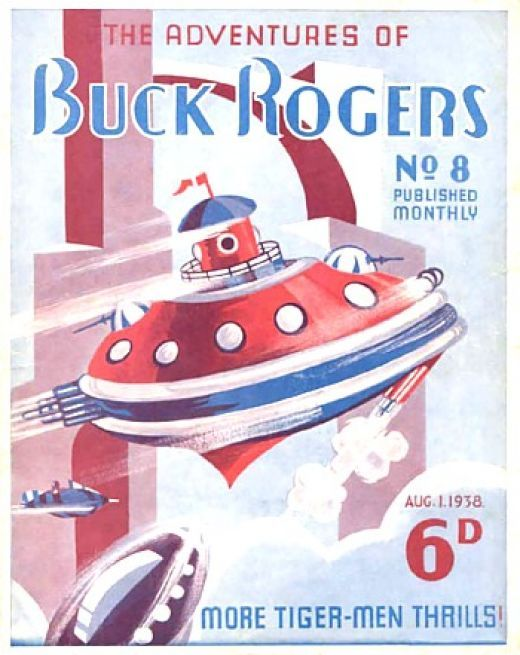

À Malakasa (Grèce), un groupe de cinq ou six
humanoïdes verts de 1,90 à 2 m apparaît aux villageois et leur remet une tablette noire gravée de caractères
inconnus. Le prêtre du village la jette dans un puits. L'histoire paraît dans la revue Iptamenoi
Diskoi (Soucoupes volantes) n° 3 de mars 1979, où l'éditeur Christos Lazos relaie le commentaire d'un lecteur
anonyme qui la tenait d'un parent. Elle figure dans le livre de Sokratis Aikaterinidis Exogiina onta
stin Ellada (tome A, p. 62), chez Thanasis Vembos (Oi pyles tou allokosmou, To
pneuma tou chronou) et dans le catalogue d'Albert Rosales. Malgré l'absence de toute confirmation, elle est
souvent citée dans les milieux ufologiques. GRUFON la classe parmi les récits fictifs : la source est non identifiée
et l'histoire a très probablement été inventée.
Hellenic
UFO Database, Volume I, GRUFON, , fiche GR_0013.
À Pialeia, Pindos (Grèce), un homme se rend à son
champ quand, près de la petite chapelle d'Agia Triada, il entend une forte détonation qui semble venir d'un ruisseau
voisin. Il ne voit d'abord rien, puis aperçoit une petite créature humanoïde (1 m), vêtue de noir et encapuchonnée,
au visage lumineux. Elle reste un instant devant lui, puis entre dans la chapelle et disparaît. Le cas est rapporté
dans le livre de Makis Podotas, UFO: Fakelos Ellada, et par Thanasis Vembos.
Hellenic
UFO Database, Volume I, GRUFON, , fiche GR_0380.
A Chamonix, J. Payot observe
la
lente progression horizontale d'un bolide du nord à l'est. L'objet est magnifique, conique, gros comme la Lune,
orange à l'avant rond, avec des flammèches rouges en pointe arrière. Dessin BSAF, 1938.
Eté
Couverture des Aventures de Buck Rogers ce mois-là

Par une nuit chaude A Herne (Norvège), Sverre
Brevik (21 ans) n'arrive pas à dormir. Il sort pour se détendre et apprécie la vue de la nature. Soudain,
il remarque un son, comme un générateur augmentant sa vitesse. Toute la zone devient alors illuminée, le son
gagne en force, lui faisant mal à la tête. À environ 20 m de lui, un objet bleuâtre s'élève. Il possède un hâlo
rougeâtre autour de lui, et ce qui semble être des ouvertures autour de lui qui soufflent un échappement
bleu-blanc. L'odeur est horrible, lui rappelant du caoutchouc brûlé. Ses yeux et sa gorge lui piquent. L'objet
monte sans aucun son, puis retombe comme un duvet (mouvement en "chute de feuille"). Il mesure entre 20 et 25 m
de diamètre, et 2 à 3 m de haut. Le témoin a l'impression d'être observé par l'objet. Ce dernier monte à nouveau
et tourne autour de la zone, à nouveau illuminée par les choses ressemblant à de l'échappement, alors qu'il
disparaît sans bruit en direction du Nord. 10 ans plus tard il observera un objet identique HJEMMETUFO-NYT, 4/1970, 159-60Liljegren: A bibliography
of references to UFO incidents during World War II, 1987, 2.
Automne
(ou automne 1939) A Juminda (côte esthonienne), 2 personnes voient
un étrange "homme-crapaud" haut de 1 m, avec une tête ronde, pas de cou et une bosse sur le devant du corps. La
bouche est une grande fente rectiligne et les yeux comme des fentes plus petites. Il a la peau vert-brun,
comparable au Pegamoïd, mais des mains normales. La créature marche d'une manière singulière mais
élégante, la tête ondulant de bas en haut pendant que les jambes bougeent avec prudence.
Poursuivie la créature accélère si vite que ses pieds deviennent presque indistincts. Environ 100 m plus loin
elle disparaît complètement.
À Lounes, Kozani (Grèce), en septembre 1938,
un étrange phénomène lumineux près de la chapelle d'Agios Athanasios intrigue les habitants. Selon les agriculteurs,
il n'apparaît qu'après minuit, par nuit sans lune. Le journaliste N. D. Tsailas du journal I
Vradyni passe la nuit du 9 septembre sur place avec un groupe de Kozaniotes, sans rien percevoir ; ses
compagnons incriminent la pleine lune. Le villageois Spyros Tolis décrit une lumière à 5-10 m de hauteur, comme une
grande lampe à huile qui se balance lentement, puis s'élève comme un ballon et disparaît au-dessus de 500 m.
D'autres disent qu'elle devient une croix lumineuse. M. Tolis y voit « quelque chose de saint » et non un fantôme,
d'où l'absence de peur. GRUFON y voit un phénomène naturel, des lumières inconnues du type de celles de Hessdalen.
Hellenic
UFO Database, Volume I, GRUFON, , fiche GR_0012.
Répétition de La Guerre des mondes au théâtre Mercury. Welles (à gauche, les bras levés),
Bernard Herrmann dirigeant l'orchestre radiophonique de la CBS, et aux micros les acteurs Ray Collins et
Richard Wilson (chemise blanche).
A New York, la radio CBS annonce la
retransmission en direct d'une soirée de variétés donnée dans un grand hôtel. 5 mn plus tard, la musique
s'interromp pour un flash d'information selon lequel l'observatoire de Jenning, dans l'Illinois, venait
d'observer à la surface de la planète Mars de curieuses projections de vapeurs inexplicables. Puis, les
sismographes de New York enregistrent une secousse. Quelques minutes plus tard, la voix altérée du speaker
annonce qu'un objet énorme et mystérieux vient de s'abattre en flammes sur une usine de Princeton (New Jersey).
On entend les sirènes hurlantes des premiers véhicules de secours. Puis, enfin, un reporter décrit "en direct"
les scènes d'épouvante qui se déroulent sous ses yeux. Les martiens désintègrent quiconque s'approche de
l'objet. Celui-ci vient d'ailleurs de s'ouvrir. Les chars et les canons sont incapables de les arrêter. Les
monstres sont là. À New York, c'est la panique. Les églises sont envahies par la foule. La police reçoit des
milliers d'appels. Il y a des suicides et des accouchements prématurés. Des centaines de personnes s'enfuient en
désordre vers la montagne, créant des embouteillages inextricables. La police décide alors d'envahir les studios
de CBS et y trouve un jeune homme de 23 ans, Orson Welles, qui achève son émission en déclarant : Rassurez-vous,
c'était simplement une adaptation de La
Guerre des Mondes, le roman de Herbert George Wells. Sur les 6
millions d'Américains qui écoutent l'émission, plus de 1 million auront cédé à la panique.
Dans la région montagneuse de Bayan-Khara Uula (confins de la Chine et du Tibet), découverte par
l'archéologue chinois Tschi Pu-tei découvre un certain nombre de tombes mystérieuses d'ancêtres des Dropas.
A Pont-Saint-Vincent, J. Bessemoulin,
chef de la station ONM de Nancy-Essey, observe un engin ovoïde, à l'éclat et au diamètre comparable à celui de
la Lune, progressant lentement en laissant derrière lui une traînée lumineuse durant 1' 15". L'objet émet un
léger sifflement, possède des stries mauves devant l'avant rond et des flammèches bleu pâle à l'arrière conique.
Dessin en tous points semblables à celui de Chamonix, le 16 mars BSAF 1938.
Le disque récupéré par les Allemands est apporté dans les mains des plus hauts
scientifiques allemands au Nord de Munich. Dans les montagnes environnantes une vieille mine de sel est
convertie en une installation pour étudier et reproduire, tant que possible, l'appareil. On s'aperçoit vite que
ce vaisseau n'est pas un appareillage top secret d'une quelconque autre nation de la Terre. Les scientifiques
nazis ont un succès incroyable en disséquant et dans la compréhension du vaisseau et de ses contenus. Aucune
autre nation n'est au courant Source à trouver.
Canadian Radio Act.
(Ou 1939) A Juminda (Estonie), un objet de 1 m de long et marron verdâtre est suivi par
2 observateurs jusqu'à ce qu'il disparaisse soudainement Vallée, Jacques: Passport to
magonia, p. 189.